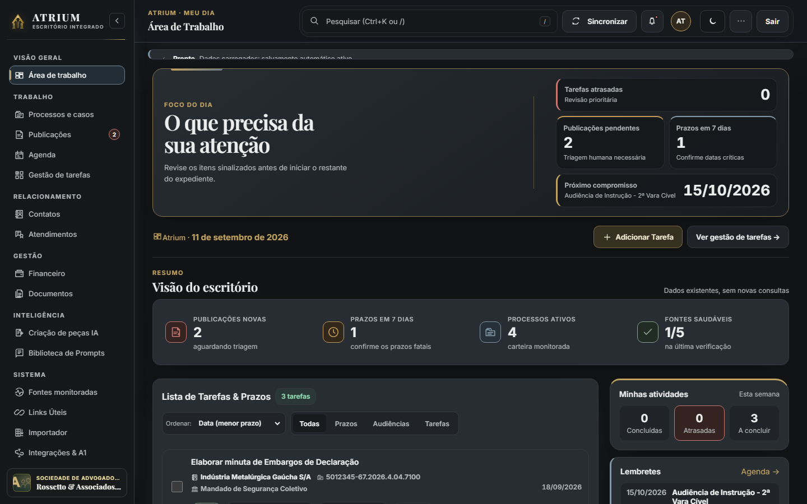

AD
Monitorando
Dr(a). Advogado(a) Titular
OAB/UF 000000 · Advogado(a) monitorado(a) principal
0fontesFontes
0com atençãoAtenção
0novas ocorrênciasNovas publicações
Centralize processos do eproc TJRS, intimações do DJEN Nacional, agenda sincronizada, cofre criptográfico AES-256 e IA assistencial de redação em uma interface moderna, rápida e em nuvem segura.

Elimine a fragmentação entre sistemas lentos, planilhas desatualizadas e custos crescentes. O Atrium reúne inteligência jurídica e controle rigoroso da rotina.
Acompanhe o andamento dos processos judiciais por fases visuais. Sincronização direta com o eproc TJRS e DataJud Nacional com histórico unificado de movimentações.
Varredura unificada do Diário da Justiça Eletrônico Nacional. Classificação semântica de intimações, destaque de prazos fatais e criação assistida de tarefas.
Autenticação mTLS nativa com o tribunal. Sua chave privada (.pfx/.p12) e segredos TOTP protegidos em cofre criptografado com chave de alta entropia.
Assistente de redação para elaboração de minutas de petições, resumos executivos de decisões judiciais e conferência estruturada, mantendo o advogado no comando.
Controle rigoroso de audiências, perícias e prazos regimentais com sincronização bidirecional iCal para Google Calendar, Apple Calendar e Microsoft Outlook.
Controle completo de honorários contratuais e sucumbenciais, adiantamentos, custas processuais, reembolsos e acompanhamento de RPVs e precatórios.
Entenda por que escritórios de advocacia estão migrando para a plataforma Atrium, eliminando cobranças abusivas por usuário e gargalos operacionais.
| Critério de Avaliação | Softwares Tradicionais (Advbox, Projuris, Astrea) | ATRIUM — Escritório Integrado |
|---|---|---|
| Modelo de Cobrança | ✕ Cobrança por usuário (R$ 150 a R$ 400/mês por advogado) | ✓ Sem taxa por usuário (Escale sem limite de custos) |
| Privacidade dos Autos | ✕ Bancos compartilhados (Seus autos em bases expostas) | ✓ Nuvem Criptografada AES-256 (Isolamento total por banca) |
| Certificado Digital A1 | ✕ Chave vulnerável (Risco de exposição em servidores genéricos) | ✓ Cofre Criptográfico (Certificado cifrado e isolado para o escritório) |
| Velocidade e Resposta | ✕ Sistemas pesados e lentos (Latência alta e telas truncadas) | ✓ Interface Ultrarrápida (Navegação instantânea sem recargas) |
| Propriedade dos Dados | ✕ Formatos proprietários (Dificuldade de exportação se cancelar) | ✓ SQLite aberto & Backups (Seus dados pertencem a você) |
| Inteligência Artificial | ✕ Add-on caro ou restrito | ✓ IA assistencial integrada (Petições, resumos e OCR) |
O Artigo 7º, inciso II do Estatuto da Advocacia (Lei 8.906/94) assegura a inviolabilidade do escritório, de seus arquivos e dados. A infraestrutura em nuvem segura do Atrium opera com criptografia de ponta a ponta e isolamento estrito de dados por escritório.
Tudo o que você precisa saber sobre a transição para o Atrium.
O Atrium opera sob arquitetura moderna de nuvem com isolamento dedicado por banca. Seus processos, clientes, documentos e certidões são protegidos com criptografia militar AES-256-GCM em trânsito e em repouso. Cada escritório possui seu ambiente virtual exclusivo e protegido por autenticação em duas etapas (2FA TOTP).
Não. O Atrium funciona perfeitamente em modo de consulta pública e monitoramento pelo DJEN Nacional. O Certificado A1 é opcional e recomendado para quem deseja consultar autos em segredo de justiça no eproc TJRS com mTLS automático via certificado.
A plataforma realiza consultas de leitura oficial às fontes públicas do tribunal e do Conselho Nacional de Justiça (DataJud e DJEN), integrando movimentações e intimações diretamente no seu painel operacional sem intervenção manual.
Não. Diferente dos softwares legados que penalizam o crescimento do escritório cobrando R$ 150 a R$ 400 por usuário, o Atrium permite adicionar advogados e colaboradores livremente no seu ambiente privativo.
Sim. O Atrium possui um importador supervisionado com prévia em tempo real para arquivos CSV, JSON e planilhas, com validação inteligente de números CNJ, CPFs e CNPJs antes de gravar qualquer dado no sistema.
Sim. Você pode acessar a plataforma diretamente pela web em qualquer navegador moderno no endereço atrium.adv.br, em computadores, tablets ou smartphones.
Junte-se à nova geração de advogados que exigem velocidade de ponta, segurança absoluta em nuvem e zero mensalidades por usuário.
Ambiente jurídico protegido
Gestão jurídica organizada, segura e supervisionada para a rotina profissional do escritório.
Validando a configuração de segurança.
Códigos de recuperação
Cada código funciona uma única vez para resgatar sua conta em caso de perda do dispositivo.
Ao entrar você concorda com os Termos de Uso e a Política de Privacidade do Atrium.
Proteção ativa: dados e chaves criptografadas permanecem sob controle do seu ambiente.
Visão executiva
Acompanhamento
Foco do dia
Carregando o resumo operacional…
Atrium ·
Resumo
aguardando triagem
confirme os prazos fatais
carteira monitorada
na última verificação
Central operacional
Indicadores para decisão
Atendimentos
| Cliente / Interessado | Tipo de Ação / Atendimento | Origem | Honorários Estimados | Responsável | Data | Status |
|---|
Operações financeiras
calculados sobre a carteira
aguardando expedição/pagamento
honorários efetivamente recebidos
custas e reembolsos vinculados
| Processo / Referência | Cliente | Tipo de Honorários / Requisição | Valor Bruto | Honorários do Escritório | Líquido Cliente | Status |
|---|
Documentos
Geração instantânea de minutas com preenchimento automático dos dados do cliente e do processo.
Acervo seguro
Leitura local supervisionada
Triagem judicial supervisionada
Organize o trabalho interno sem alterar silenciosamente a fonte oficial.
Gestão do trabalho
Arraste uma tarefa ou use o controle Mover para em cada cartão.
Carteira processual
Contatos importados de sistemas jurídicos e preservados no armazenamento criptografado.
Relacionamentos do escritório
| Contato ↕ | Documento ↕ | Canais ↕ | Localidade ↕ | Data de cadastro ↕ | Origem ↕ |
|---|
Planejamento
Atividades do dia
Sistema
OAB/UF 000000 · Advogado(a) monitorado(a) principal
Editar principal →CONEXÕES SEGURAS
Conecte uma URL Webcal ou iCal para complementar a agenda do ATRIUM, sem alterar prazos processuais.
Camada de conferência de publicações e andamentos do Diário de Justiça Eletrônico Nacional.
Monitoramento da Revista da Propriedade Industrial (Seção V: Marcas) para acompanhamento de marcas, despachos e termos do escritório.
Acompanhe credenciais, sessões e atualizações read-only por portal, com intervenção humana quando exigida.
Importe processos, contatos e clientes em lote via planilhas XLSX ou relatórios XLS do eproc.
Configure o transporte SMTP seguro para envio de comunicações e boletins do escritório.
Lista de endereços habilitados para notificações judiciais.
Importe processos, contatos, clientes e tarefas em lote via arquivos Excel (.xlsx) ou CSV com mapeamento inteligente.
Dados · importação em lote
Revise uma planilha antes de consolidar processos, contatos e tarefas no escritório.
Selecionar arquivo
Suporta relatórios .XLS do eproc (TJRS, TRF4, TJSC, TJSP), planilhas .XLSX e arquivos .CSV.
Detecção inteligente: Número Processo, Classe, Autores/Clientes, Réus, Localidade, Assunto, Andamentos e Valores. O arquivo será analisado antes de qualquer confirmação.Instruções de formato
Colunas como Número do processo, Cliente, Tribunal/Comarca, Tipo de Ação, Fase e Honorários.
Colunas como Nome, CPF/CNPJ, Telefone / Celular, E-mail, Cidade e UF.
Colunas como Título da tarefa, Processo, Cliente, Data Limite / Prazo e Responsável.
Importação supervisionada
O upload prepara uma prévia. Nenhum registro é importado até a confirmação explícita.
Datas presentes na planilha podem ser importadas como dados informados. O ATRIUM não calcula nem infere prazo fatal durante a importação.
Arquivo carregado
Revise a prévia e os totais antes de confirmar.
Registros existentes podem ser conciliados pelos identificadores já utilizados pelo sistema. A confirmação só é concluída após a persistência.
O arquivo não forneceu linhas para a prévia tabular. Revise os totais antes de confirmar.
Administração
Organize a estrutura, os acessos e a proteção dos dados em um único espaço administrativo.
Catálogo protegido
Rastreabilidade
Consulte o registro cronológico local das atividades recentes do sistema e exporte o histórico completo para conferência.
Trilha de Auditoria Imutável (Zero Trust)
Registro de atividades
Eventos locais recentes, exibidos na ordem mantida pelo Store. A apresentação não altera nem reclassifica registros.
A exportação inclui o registro completo, independentemente dos filtros exibidos.
Inteligência assistida
Olá, Doutor(a)! Sou seu Assistente Jurídico Inteligente, integrado com a inteligência do Google Gemini.
Posso ajudá-lo(a) a:
Como posso auxiliá-lo(a) hoje?
Biblioteca jurídica
230 prompts jurídicos especializados e calibrados para pesquisa, redação de peças, análise de riscos e estratégia processual.
Referências
Acesse legislação, jurisprudência e ferramentas externas utilizadas na rotina do escritório.
Atalhos diretos para legislações oficiais compiladas do Planalto, pesquisa de jurisprudência do STJ, ferramentas de IA jurídica e links personalizados.
Do escritório
Atalhos e referências adicionadas pelo seu escritório.
Fontes normativas
Textos legais oficiais e compilados com as últimas atualizações legislativas.
Texto legal compilado oficial da legislação civil brasileira (obrigações, contratos, família, sucessões, posse e propriedade).
Código de Processo Civil vigente (contagem de prazos em dias úteis, tutelas provisórias, execução, recursos e precedentes).
Normas que regulam as relações individuais e coletivas de trabalho e o direito processual do trabalho no Brasil.
Constituição da República Federativa do Brasil promulgada em 5 de outubro de 1988 com todas as Emendas Constitucionais.
Código Penal brasileiro compilado (parte geral, crimes contra a pessoa, patrimônio, dignidade sexual e administração pública).
Código de Processo Penal brasileiro compilado (inquérito policial, ação penal, provas, prisões cautelares, júri e recursos).
Precedentes
Pesquisa unificada de acórdãos, súmulas e teses repetitivas nos Tribunais Superiores.
Apoio externo
Plataformas externas gratuitas com IA e hubs de apoio à prática jurídica.
Portal web dedicado com o catálogo completo de 230 prompts jurídicos estruturados, busca interativa e atalhos de cópia rápida.
Ferramenta gratuita de pesquisa de jurisprudência potencializada por Inteligência Artificial para busca semântica e precedentes.
Ferramenta gratuita de transcrição de áudio e vídeo de audiências com Inteligência Artificial, geração de resumos e minutagem.
Acesse modelos de prompts calibrados para elaboração de recursos, contestações, teses defensivas e análise de riscos com IA.
Painel do Advogado (A1 + 2FA) e revelação de segredos de justiça
Iniciando canal seguro mTLS com o tribunal TJRS…
Validação do certificado .pfx e conexão direta mTLS
Geração do código de dois fatores e login no Keycloak TJRS
Leitura de intimações pendentes e prazos processuais em aberto
Revelação de partes em segredo de justiça e captura de chaves
Enriquecimento cadastral e vinculação na agenda do escritório
Quadro de trabalho
Renomeie etapas, adicione novas colunas ou remova as que estiverem vazias.
Conta pessoal
Atualize os dados exibidos no ATRIUM.
Prompt jurídico
Novo registro
Monitoramento autenticadoCobertura judicial
Sessões isoladas, sincronização conservadora e intervenção humana quando o portal exigir.
Visão operacional
Carregando estado das conexões…
Limite operacional: o ATRIUM consulta acervo, movimentos e publicações; nunca pratica ciência, assinatura, petição, protocolo ou confirmação automática de prazo.
Autenticação manual
Importante: certificado válido não significa sessão autenticada. O ATRIUM somente consulta dados depois que o portal confirmar a sessão.
Etapa 1 · Criptografia & mTLS Local
O PFX e a senha são armazenados cifrados com AES-256-GCM localmente. A chave privada nunca sai deste computador.
Desvenda processos em Segredo de Justiça no eproc TJRS via Certificado A1 + 2FA, vincula clientes não identificados e preenche juízo, comarca e classe faltantes.
Etapa 2
Habilite somente os portais usados pelo escritório. PFX, PJeOffice, Windows Store e TOTP permanecem estratégias independentes.
Etapa 3
Vincule o QR Code de ativação gerado pelo tribunal (PJe/eproc) ou exportado pelo Google Authenticator.
Automação de MinutasWorkspace documental
Configuração
Escolha apenas os dados já cadastrados.Identidade do escritório
Dados usados na navegação e nos documentos gerados pelo ATRIUM.
Seu escritório jurídico em um único ambiente, inteligente e seguro.
O Atrium reúne processos, publicações, tarefas, agenda, documentos, contatos, financeiro e inteligência jurídica em uma interface web moderna e integrada para a rotina do escritório.
Personalize sua identificação profissional no sistema e nas minutas.
Assinatura visual da banca para documentos e cabeçalhos institucionais.
Escolha a paleta visual que melhor se adapta à sua rotina profissional.
Autenticação nos tribunais, autos na íntegra e proteção criptográfica.
É a sua identidade digital de advogado em formato de arquivo (.pfx). Permite ao Atrium consultar autos protegidos por sigilo profissional no eproc TJRS.
Sua chave privada fica isolada no cofre criptográfico seguro do seu escritório. Ela é protegida com criptografia militar AES-256 e acessível apenas pela sua banca.
Solicite o arquivo à sua Autoridade Certificadora conveniada à OAB (ex: Certisign, Soluti, Serasa, Safeweb) e faça o download no seu computador.
Sua identidade está configurada e protegida com criptografia local.
Sincronização de Agenda
Inteligência Artificial
Comunicação e Notificações
O boletim consolida as publicações do período ativo usando exclusivamente os dados persistidos no servidor.
Gestão Financeira & Honorários
Integrações & Infraestrutura
Teste de Comunicação
Comunicação Judicial
Triagem de Publicações
Triagem de Publicações
Notificações por E-mail
Seção V - Marcas · INPI
Varredura semanal da Revista da Propriedade Industrial para advogados do escritório.
Não foram localizados despachos correspondentes aos advogados monitorados com os filtros atuais.
Integração Judicial eproc
O Certificado A1 (.pfx ou .p12) é utilizado para consultar o eproc TJRS, ler processos em segredo de justiça e baixar os autos na íntegra.